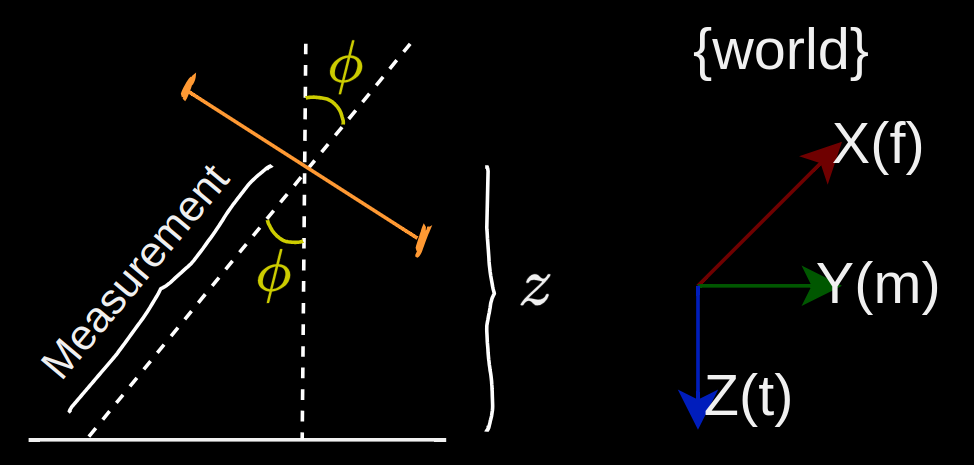

For a 2D quadrator moving in the vertical plane, the state would be $y$, $z$, the roll angle $\phi$, and their corresponding derivatives.
$$
x = \begin{bmatrix}y \\ z \\ \phi \\ \dot{y} \\ \dot{z} \\ \dot{\phi}\end{bmatrix}
$$
Measurement model
The drone is at some vertical position $z$ with a laser range finder pointing downwards. If it were a perfect sensor, it would measure a distance to the ground that's equal to $\frac{z}{cos\phi}$.

In this case the measurement space is one dimensional. Because of the $cosine$, the measurement model is non-linear.
$$\begin{align*}
y &= Hx + v \\
y &= \begin{bmatrix} 0 & \frac{1}{cos\phi} & 0 & 0 & 0 & 0\end{bmatrix}
\begin{bmatrix}y \\ z \\ \phi \\ \dot{y} \\ \dot{z} \\ \dot{\phi}\end{bmatrix} + v
\end{align*}$$